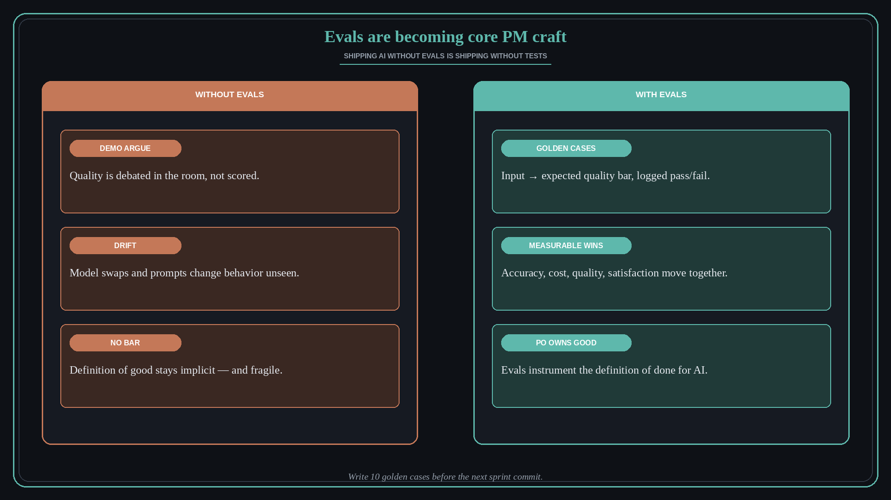

Evals are becoming core PM craft
Source: Lenny Rachitsky (@lennysan)
original post
What it claims
Evals keep coming up with PMs and podcast guests — nearly half of recent PM openings asked for eval-writing experience. Teams that invest see measurable wins: Ramp receipt collection 35%→83% accuracy; Shopify AI workflow builder 2.2× faster and 68% cheaper than a frontier-model setup; Harvey AI contract reviewer nearly doubled internal quality; Cursor Auto Balance higher satisfaction at 41% lower cost. Hamel Husain and Shreya’s advanced sequel covers the step most teams skip, what to automate vs not, and a free coding-agent plugin for product-specific evals (also tip-linked: github.com/ai-evals-course/evals-skills).
Why it matters for a PO
If your product uses AI/LLM features — or will — shipping without evals is shipping without tests. POs own the definition of good; evals instrument that definition so quality is scored, not argued in a demo.
3 takeaways
- Eval skill is becoming hiring signal — treat it as craft, not a side hobby.
- Real products show step-change gains when evals drive iteration (accuracy, cost, quality, satisfaction).
- Most teams skip the hard part: defining what good looks like before they automate scoring.
Practice this week
Pick one AI-touched user journey. Write 10 golden cases (input → expected quality bar). Run them once manually or with an agent skill; log pass/fail before the next sprint commit.